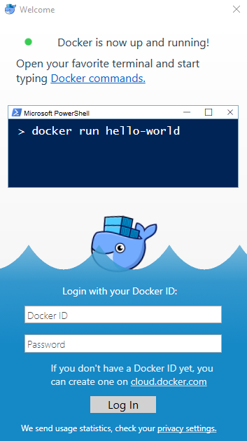

Docker
使用管理者權限開啟 Windows PowerShell 執行 Enable-WindowsOptionalFeature -Online -FeatureName Microsoft-Hyper-V -All
啟用 container 執行 Enable-WindowsOptionalFeature -Online -FeatureName containers -All
Download Docker for Windows And Install

切換 "C:\Program Files\Docker\Docker\DockerCli.exe" -SwitchDaemon
在你的 dotnet core web 目錄底下 C:\myweb 建立 "Dockerfile" 檔案
FROM microsoft/dotnet:2.0-sdk
WORKDIR /app
COPY /VDisk/GitProjects/WebPack/SqlChartWeb/SqlChartWeb/*.csproj ./
RUN dotnet restore
COPY . ./
RUN dotnet publish -c Release -o out
ENTRYPOINT ["dotnet", "out/SqlChartWeb.dll"]
然後輸入
Mirror
[Net.ServicePointManager]::SecurityProtocol = [Net.SecurityProtocolType]::Tls12 Invoke-WebRequest "https://github.com/docker/compose/releases/download/1.22.0/docker-compose-Windows-x86_64.exe" -UseBasicParsing -OutFile $Env:ProgramFiles\docker\docker-compose.exe
版號可以從這裡查詢 https://github.com/docker/compose/releases
pip uninstall docker-compose
https://github.com/goharbor/harbor/releases